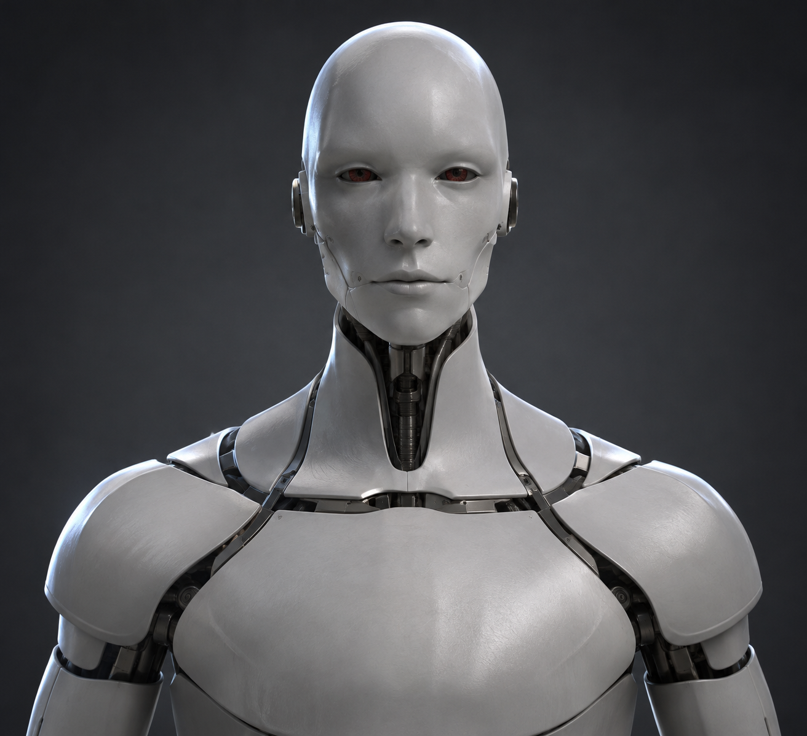

AURA.
UN INCONTRO CON IL FUTURO

IN ATTESA DI UNA DOMANDA
Tocca il microfono oppure scrivi una domanda
AURA-3025 · Mascagni Festival · ideazione di Marco Voleri e Massimo Salotti

AURA-3025 · Mascagni Festival · ideazione di Marco Voleri e Massimo Salotti
AURA
Il microfono si attiva soltanto su richiesta, se il browser lo supporta e concedi il permesso. Questa demo non salva la tua voce.
Pannello dimostrativo non ancora protetto da autenticazione. Non inserire dati riservati.
Il sito del Mascagni Festival sarà la fonte per date, luoghi e biglietti. L'aggiornamento automatico è da integrare.
Apri il sito del FestivalAnnota parole di prova: vengono salvate soltanto su questo dispositivo.
Curioso, colto, ironico. Particolarmente competente su Pietro Mascagni, Cavalleria rusticana e il Festival.